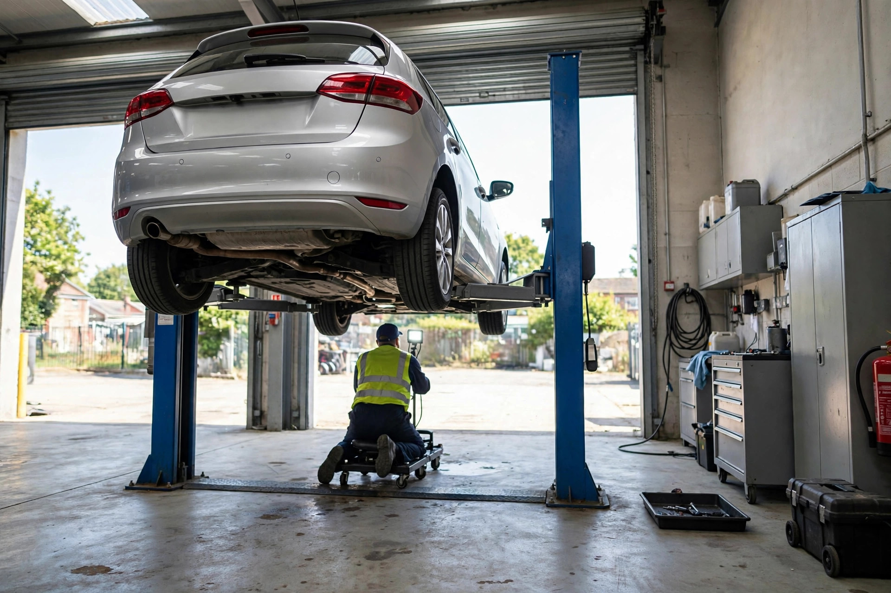
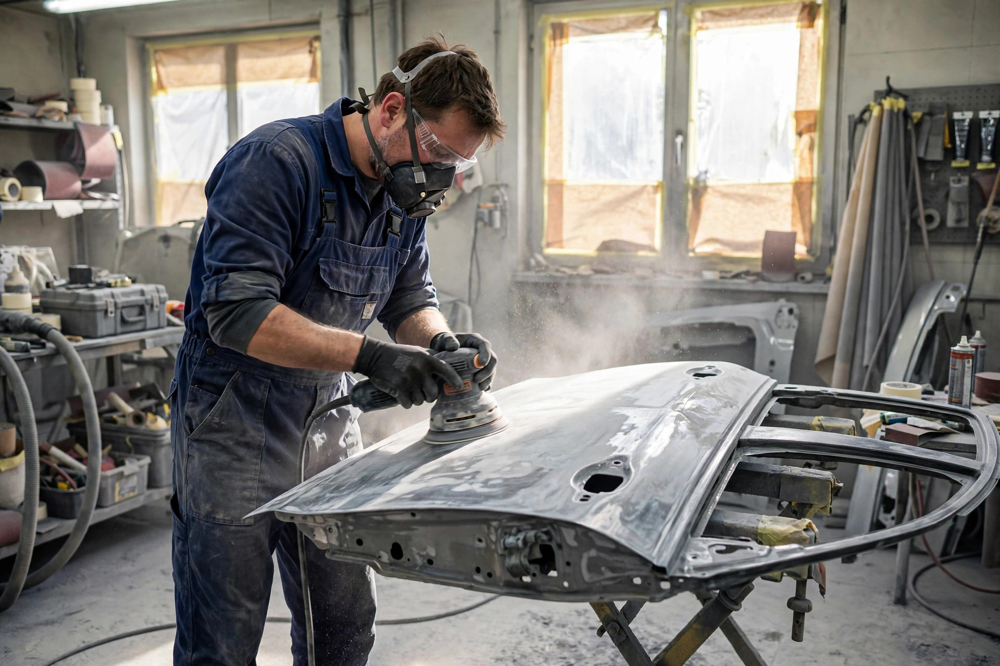
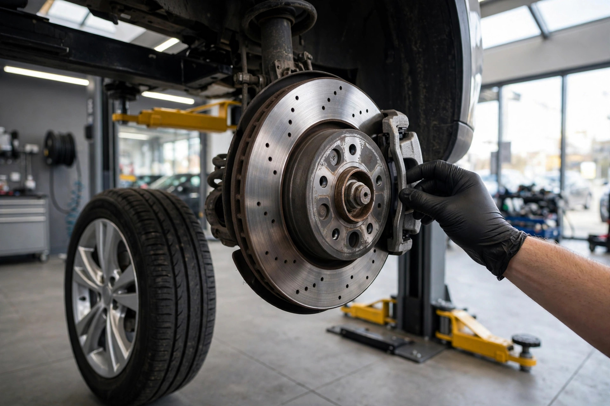
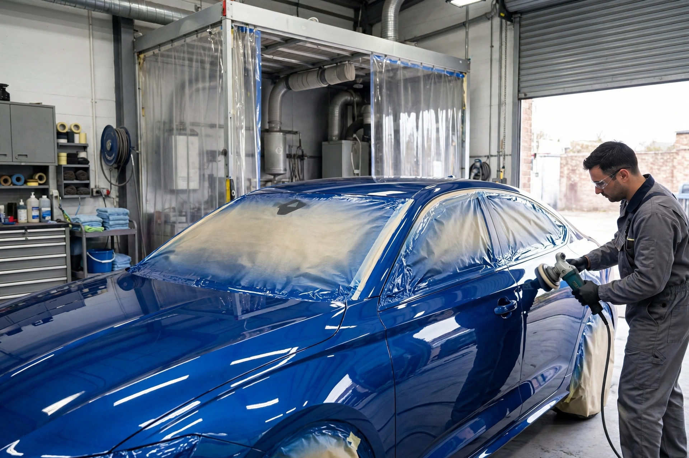

MOT Testing
Class 4 & 4a MOT tests — cars, vans, taxis, private hire and motorhomes. Straightforward testing, clearly explained.

Leeds LS9 · MOT Centre & Autobodies
MOT testing, servicing, repairs and bodywork under one roof in Leeds — honest work, clearly explained, done right the first time.
What we do
Class 4 & 4a MOT tests — cars, vans, taxis, private hire and motorhomes. Straightforward testing, clearly explained.
Routine servicing to keep your vehicle running right — fluids, filters and the checks that catch problems early.
Mechanical repairs big and small — diagnosed properly, fixed properly, and priced before we start.
Car body repairs done with care — the trade in our name. Solid, tidy work that lasts.
Dents, scrapes and damaged panels repaired and refinished — your car looking like itself again.
Failed your MOT? We fix the issues that failed, so you can get back on the road with a pass.

Why choose us
We're an independent Leeds MOT centre that also does bodywork — so if your car fails or needs repairs, it's all handled in one place. No runaround, no jargon.
The workshop


Come say hello
Good to know
We test Class 4 & 4a vehicles — cars, vans, taxis, private hire vehicles and motorhomes up to 12 seats.
Yes. We're an MOT centre and a repair workshop, so most failures can be fixed right here — then retested.
Give us a ring on 0113 234 3083 to book your MOT — that way we can get you in and out with minimum waiting.
Firth Street Terrace, Firth Street, Leeds, West Yorkshire LS9 7NG — not far from the city centre.
Get in touch